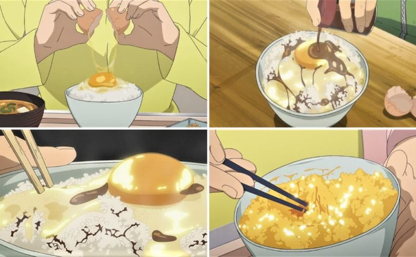

Tamago Kake Gohan

Description
Translated to English as "Eggs on Rice", this simple recipe is a classic Japanese comfort food.
Ingredients
- 1 cup cooked hot white rice
- 1 egg
- 1/2 teaspoon soy sauce
- 1/2 teaspoon mirin (optional)
Steps
- Place rice in a bowl and make a shallow indentation in the center
- Break the whole egg into the center
- Season with soy sauce
- Add any optional seasoning if using
- Stir vigourously with chopsticks
- Serve immediately